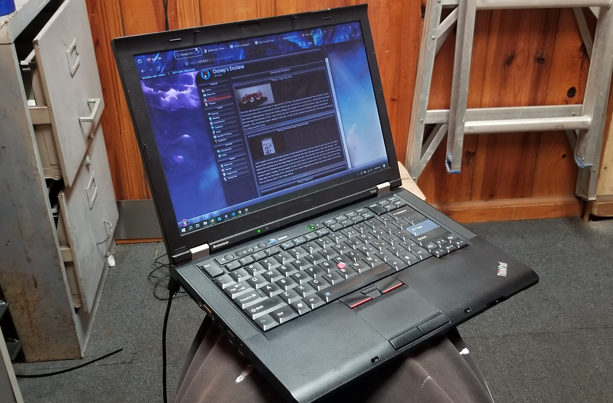

Thing 5: Lammy (2010 T410 Thinkpad)

This laptop is special to me not because of it's specs but because of how much we've been through together. I was always more of a desktop guy, there was no reason for me to sacrifice performace and repairability only to have a smaller form factor device. Alas, the summer before I started University I realized that this tradeoff would be neccecary. So I turned to the people of reddit to guide in finding a suitable laptop for my university journey. I wasn't willing to spend more than $400 on this new laptop as I didn't need good performace or a high resolution for school work. Reddits verdict was that I get myself a Thinkpad. So I did some research of my own and concluded that reddit was right in recommending me a thinkpad. I took to amazon in search of one. I decided on getting a refurbished T480 ThinkPad for ~$280. A week passed and it finally arrived. Upon inspection it was exactly what I expected it to be, one of these futuristic, hyperthin, backlit keyboard laptops. I grudgingly approved of it as I didn't need to like it, I only needed it to carry me through university. This was until I found out that the laptop was TOUCHSCREEN. I was honestly disgusted; was I really going to degrade myself so such a great extent that I'd make this TOUCHSCREEN "laptop" work? I concluded that I had more self respect and promptly returned it. And so I was back at square 1. I wasn't expecting a 8 year old laptop to be touchscreen but I guess it's not as new of a technology as I had initially assumed. So I started to search for even older thinkpad laptops from Craigslist and Facebook Marketplace, I was pleasantly suprised to see how cheap these laptops were going for. After two or three days of searching, I found this laptop listed for $40. I contacted the seller and we arraged a pick up time and place and then she was mine. I knew she would need some work though if I wanted her to serve me well in todays realm of bloated OS's (I wanted windows 10, though I eventually dual booted her with debian). She ended up getting two upgraded ram sticks (The best ones the motherboard was compatible with); an SSD to replace it's HDD; redone CPU themral paste as I assumed it had never been changed (14 years); compressed air to clean out all the dust; and a new battery because the old one was dead. I installed windows 10 on her and she ran almost as well as the shitty touchscreen laptop I had initially bought. This was all before I even began University. Now three years later when I'm a year away from graduating she's still running like new. (I'm typing this out with her keyboard acutally). I can't see myself ever retiring her, there is no part I'm unwilling to replace, motherboard, screen, CPU, what have you. This will be my laptop until the day I die.